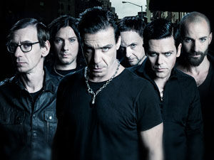

Rammstein
Rammstein (często zapisywane skrótowo jako R+) – niemiecki zespół industrial metalowy, nurtu Neue Deutsche Härte, powstały w 1994 roku. Nazwa zespołu pochodzi od amerykańskiej bazy lotniczej (Ramstein Air Base) w Niemczech, położonej obok miasta Ramstein-Miesenbach, w której miał miejsce wypadek lotniczy, o którym grupa nagrała utwór o tej samej nazwie. Początkowo nazwa zespołu brzmiała „Rammstein Flugschau”, która jednak wkrótce została skrócona do Rammstein. Paul Landers, jeden z ówczesnych twórców nowej nazwy, w późniejszym czasie wyjaśnił, iż nowa nazwa zespołu była wymyślona prześmiewczo i ze względu na niewiedzę omyłkowo zapisana przez dwa M.
